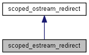

#include <iostream.h>
类 scoped_estream_redirect 继承关系图:

scoped_estream_redirect 的协作图:
Public 成员函数 | |
| scoped_estream_redirect (std::ostream &costream=std::cerr, object pyostream=module::import("sys").attr("stderr")) | |
 Public 成员函数 继承自 scoped_ostream_redirect Public 成员函数 继承自 scoped_ostream_redirect | |
| scoped_ostream_redirect (std::ostream &costream=std::cout, object pyostream=module::import("sys").attr("stdout")) | |
| ~scoped_ostream_redirect () | |
| scoped_ostream_redirect (const scoped_ostream_redirect &)=delete | |
| scoped_ostream_redirect (scoped_ostream_redirect &&other)=default | |
| scoped_ostream_redirect & | operator= (const scoped_ostream_redirect &)=delete |
| scoped_ostream_redirect & | operator= (scoped_ostream_redirect &&)=delete |
额外继承的成员函数 | |
| Protected 属性 继承自 scoped_ostream_redirect | |
| std::streambuf * | old |
| std::ostream & | costream |
| detail::pythonbuf | buffer |
详细描述
\rst Like scoped_ostream_redirect, but redirects cerr by default. This class is provided primary to make py::call_guard easier to make.
.. code-block:: cpp
m.def("noisy_func", &noisy_func, py::call_guard<scoped_ostream_redirect, scoped_estream_redirect>());
\endrst
构造及析构函数说明
◆ scoped_estream_redirect()
|
inline |
该类的文档由以下文件生成:
- D:/zhr_files/Multitarget-tracker-master/thirdparty/pybind11/include/pybind11/iostream.h